Screenshots¶
The screenshots are not up-to-date.
Qt Widgets based GUI under Windows 11¶
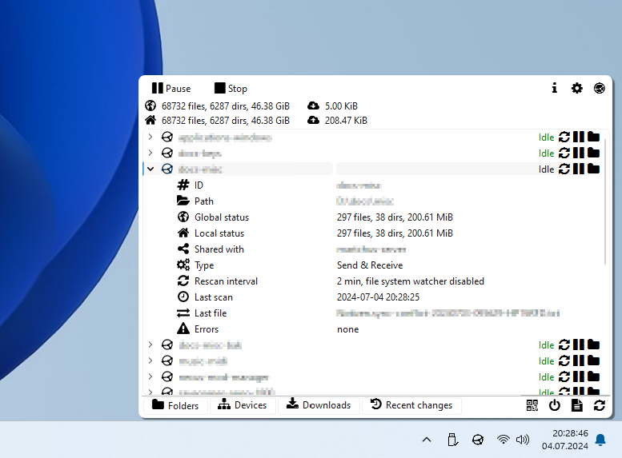
Qt Widgets based GUI under Openbox/Tint2 with dark Breeze theme¶
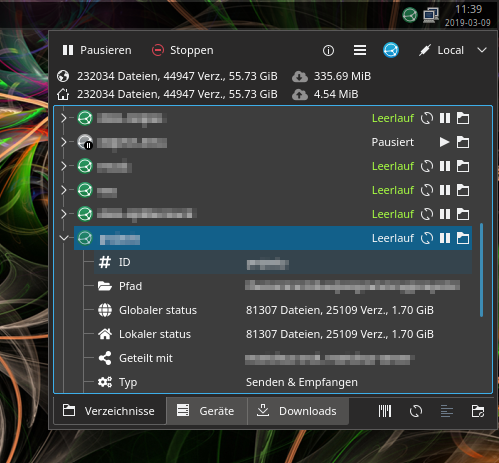
Plasmoid (for KDE’s Plasma shell)¶
Light theme¶
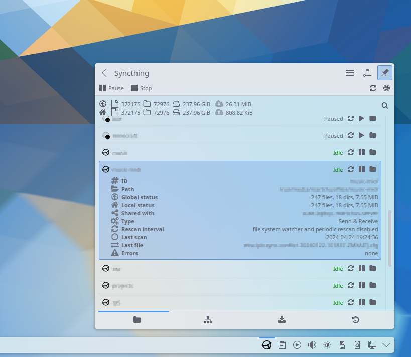
Dark theme¶
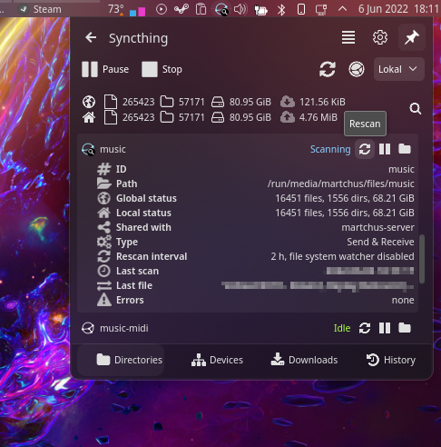
Icon customization dialog¶
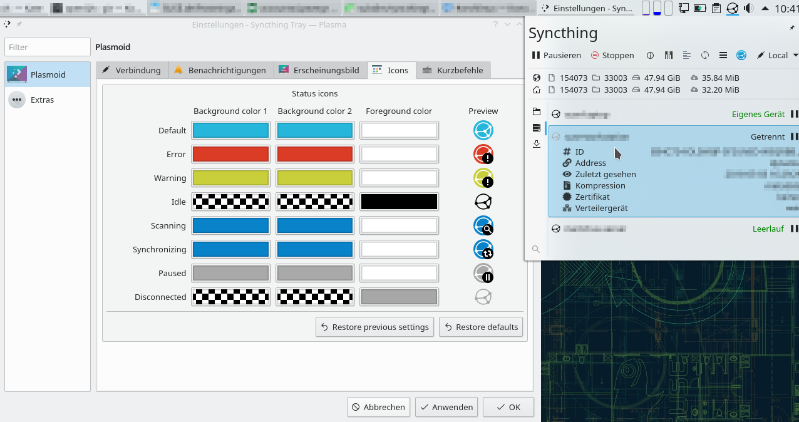
Settings dialog¶
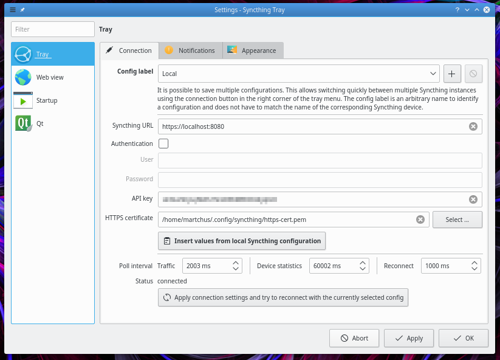
Web view¶
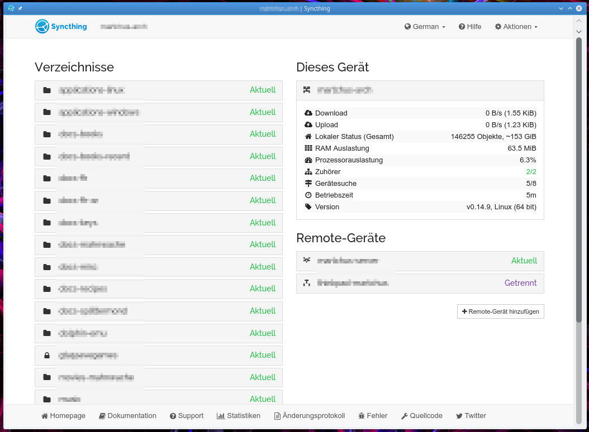
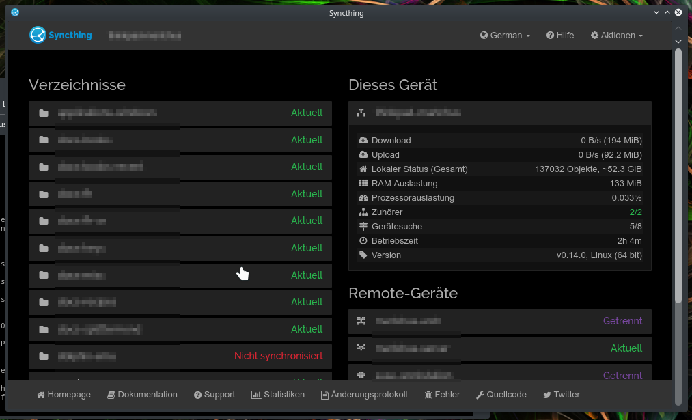
Syncthing actions for Dolphin¶
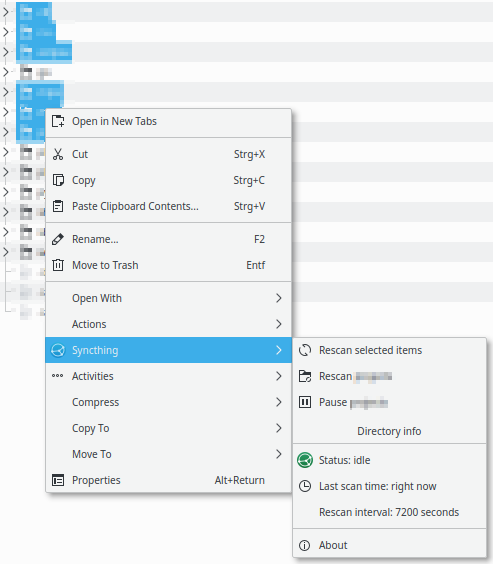
Mobile UI on Android¶
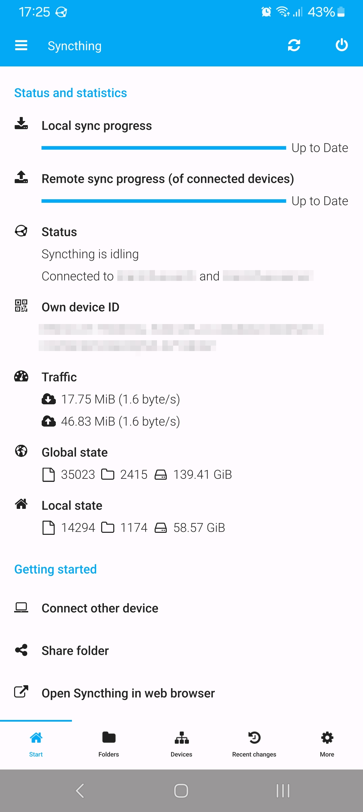
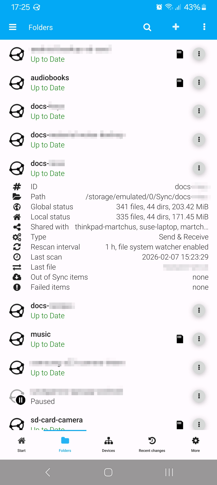
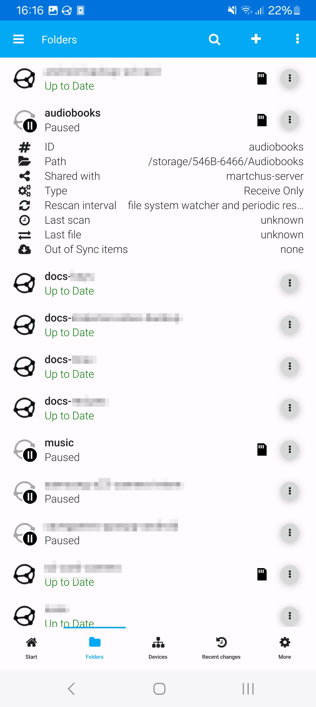
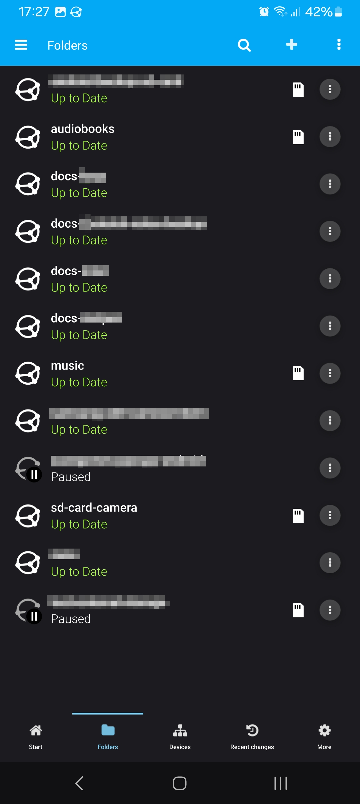
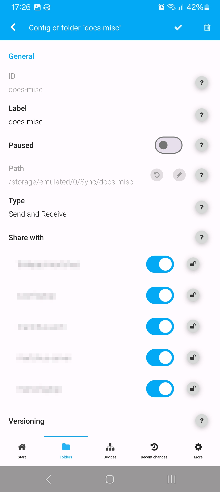
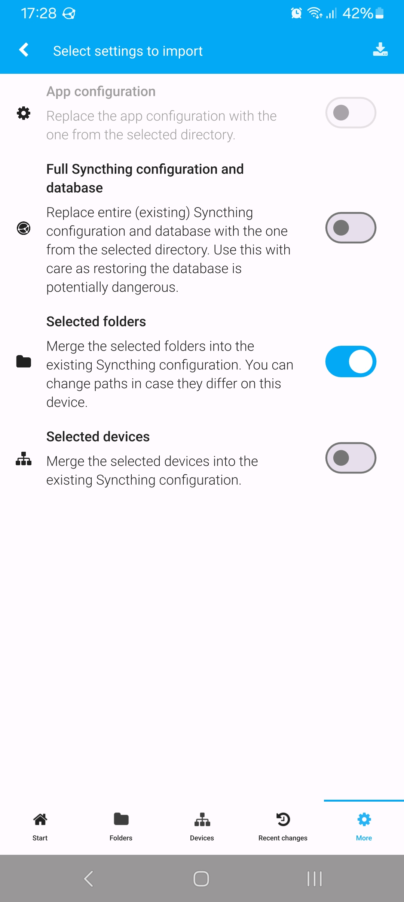
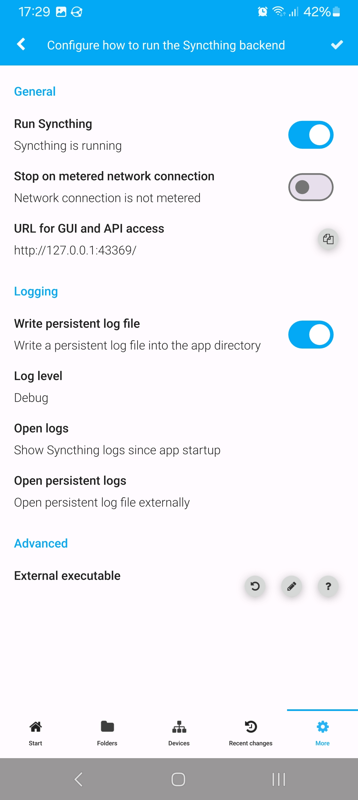
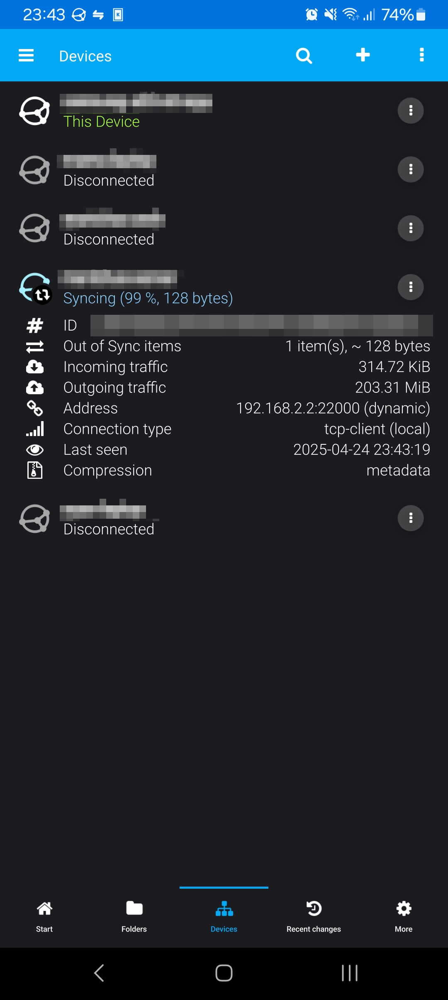
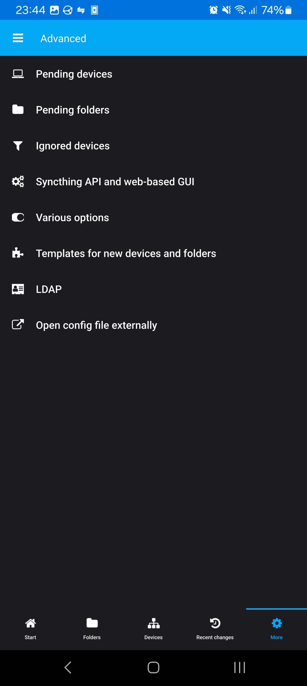
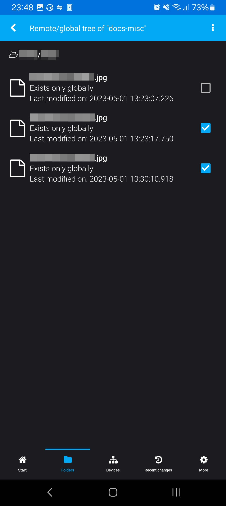
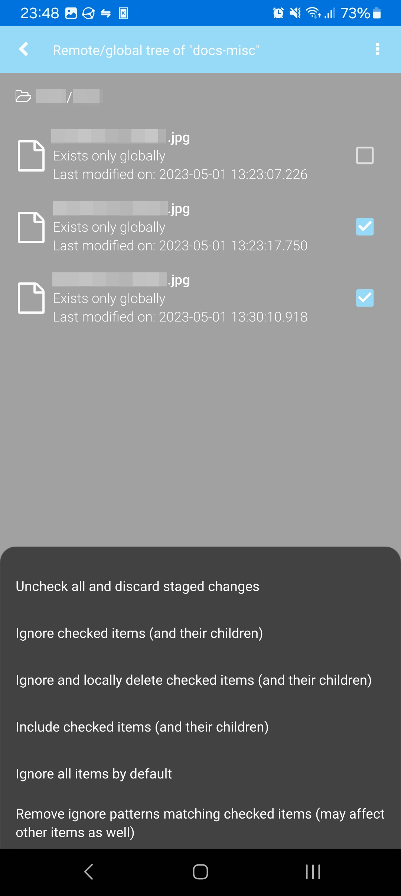